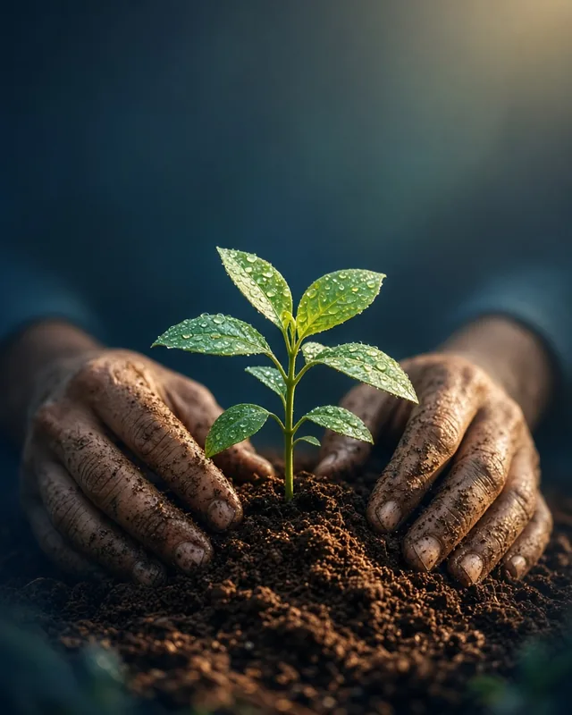

Des réponses concrètes aux besoins des plus vulnérables.
À travers l’accueil, l’accompagnement, l’éducation et la solidarité, nous cherchons à restaurer la dignité, encourager l’autonomie et révéler le potentiel de chacun.
Six axes, quinze actions
15 actions affichées
-
 Accompagnement spirituel et humain
Accompagnement spirituel et humain
Accompagnement spirituel des hommes adultes
Nous accompagnons tout homme majeur qui désire approfondir sa relation personnelle avec Dieu : comprendre le plan de Dieu pour sa vie, appliquer au quotidien les enseignements de la Bible, apprendre à renoncer à soi pour mieux servir et devenir une source de bénédiction pour son entourage.
-
 Soutenir les femmes et les familles
Soutenir les femmes et les familles
Hébergement et accompagnement des femmes en difficulté
Un accueil sécurisant et un accompagnement personnalisé : un environnement stable, une écoute bienveillante et un soutien moral, spirituel et matériel pour se reconstruire.
-
 Soutenir les femmes et les familles
Soutenir les femmes et les familles
Parrainage des jeunes femmes monoparentales
Un accompagnement moral, pratique et matériel des jeunes mères, pour renforcer leur autonomie, stabiliser leur situation et offrir un avenir meilleur à leurs enfants.
-
 Éducation et réussite des jeunes
Éducation et réussite des jeunes
Prévention du décrochage scolaire et social
Nous intervenons auprès des jeunes pour prévenir l’abandon scolaire et favoriser leur inclusion sociale.
-
 Éducation et réussite des jeunes
Éducation et réussite des jeunes
Promotion de la réussite scolaire
Un soutien adapté aux besoins de chaque élève, pour favoriser sa réussite, développer ses compétences et l’aider à progresser dans son parcours.
-
 Éducation et réussite des jeunes
Éducation et réussite des jeunes
Aide aux devoirs
Un soutien pédagogique personnalisé pour aider enfants et adolescents à mieux comprendre leurs cours, à s’organiser et à gagner en autonomie.
-
 Solidarité alimentaire et matérielle
Solidarité alimentaire et matérielle
Épicerie solidaire
Des denrées essentielles à prix réduits pour alléger les charges quotidiennes des familles et garantir un accès digne à l’alimentation.
-
 Solidarité alimentaire et matérielle
Solidarité alimentaire et matérielle
Friperie solidaire
Des vêtements accessibles à tous, pour préserver la dignité des familles, réduire leurs dépenses et valoriser le réemploi.
-
Solidarité alimentaire et matérielle
Lutte contre le gaspillage alimentaire
Nous collectons et redistribuons des denrées : un projet qui allie solidarité, écologie et responsabilité sociale.
-

Solidarité alimentaire et matériellePlantations solidaires
Des fruits et légumes cultivés et préparés pour être distribués gratuitement à l’épicerie solidaire.
-
 Aide sociale et soutien du quotidien
Aide sociale et soutien du quotidien
Soutien financier aux familles à faibles revenus
Une prise en charge d’une partie des frais de scolarité, de cantine ou des dépenses essentielles quand les ressources ne suffisent plus.
-
 Aide sociale et soutien du quotidien
Aide sociale et soutien du quotidien
Aide aux courses et aux démarches
Un accompagnement des personnes âgées, isolées ou en perte d’autonomie dans leurs courses, leurs déplacements et leurs démarches administratives.
-
 Aide sociale et soutien du quotidien
Aide sociale et soutien du quotidien
Soutien aux personnes en parcours de soins
Une présence, une écoute et une aide concrète pour les personnes qui traversent des traitements médicaux lourds ou des situations de santé difficiles.
-
 Inclusion numérique et parentalité
Inclusion numérique et parentalité
Inclusion numérique pour tous
L’accès aux outils en ligne, aux services administratifs, aux ressources pour la recherche d’emploi et à des formations de base, pour réduire la fracture numérique.
-
 Inclusion numérique et parentalité
Inclusion numérique et parentalité
Parentalité à l’ère du numérique
Former et accompagner les parents pour encadrer les usages numériques de leurs enfants, avec des pratiques responsables, sécurisées et adaptées à chaque âge.
Images d’illustration
Le projet « Plantations solidaires »
Nous cultivons et préparons des fruits et légumes destinés à être distribués gratuitement à l’épicerie solidaire.
Ce projet, complémentaire à la formation chrétienne, permet de :
- servir concrètement les personnes dans le besoin ;
- sensibiliser à la création, à la gestion et à la préservation des ressources ;
- vivre l’enseignement de Jésus-Christ à travers le service et le don de soi.
Projets spécifiques et urgents
Des situations critiques qui demandent une intervention immédiate.
Récits et prénoms publiés avec l’accord écrit des personnes : à confirmer par l’association
-
 Image d’illustration
Image d’illustrationLudivine, une femme aveugle courageuse, confectionne des gâteaux pour subvenir aux besoins de sa famille. Son espace de cuisine a été fermé par l’agence de sécurité alimentaire en raison de l’insalubrité. Nous voulons lui offrir un nouvel espace de travail conforme, sécuritaire et adapté à son handicap, afin qu’elle puisse continuer à vivre de son talent.
- Objectif
- Reconstruire une cuisine professionnelle adaptée
- Impact
- Autonomie, dignité, revenu stable
Objectif financier à compléterJe veux aider Ludivine -
 Image d’illustration
Image d’illustrationCharles a longtemps lutté contre la consommation de stupéfiants. Il a récemment décidé de suivre Jésus comme Sauveur et Seigneur personnel, un tournant majeur dans sa vie. Nous voulons l’aider à persévérer en finançant un centre de désintoxication chrétien, ainsi qu’un accompagnement spirituel et humain.
- Objectif
- Financer un programme chrétien de réhabilitation
- Impact
- Transformation durable, accompagnement spirituel
Objectif financier à compléterJe veux soutenir Charles -
 Image d’illustration
Image d’illustrationPrudence a été abandonnée par son conjoint, qui a laissé derrière lui cinq enfants. Dans cette épreuve, elle a choisi de suivre Jésus comme Sauveur et Seigneur personnel. Elle vend des accessoires en ligne pour survivre, mais sa situation reste fragile. Nous voulons lui assurer un logement stable, afin qu’elle puisse reconstruire sa vie avec ses enfants.
- Objectif
- Assurer un logement stable et sécuritaire
- Impact
- Protection des enfants, reconstruction familiale
Objectif financier à compléterJe veux aider Prudence et ses enfants -
 Image d’illustration
Image d’illustrationLaure est mère de trois enfants et vit avec un diabète de type 2. Seule, elle doit gérer à la fois sa maladie et les besoins de sa famille. Nous l’accompagnons dans sa prise en charge médicale, mais sa situation reste précaire. Nous voulons lui assurer un hébergement stable, afin qu’elle puisse prendre soin d’elle-même et de ses enfants dans un environnement sécuritaire.
- Objectif
- Offrir un logement sécuritaire et stable
- Impact
- Santé, stabilité, protection des enfants
Objectif financier à compléterJe veux soutenir Laure et sa famille

Transparence et intégrité
Chaque don est utilisé avec soin, honnêteté et responsabilité. Nous rendons compte de nos actions et de nos finances à nos partenaires et à nos bénéficiaires.
« Ce qu’on demande des dispensateurs, c’est que chacun soit trouvé fidèle. » 1 Corinthiens 4:2
- Statut
- Organisme sans but lucratif, siège à Ottawa
- Numéro d’entreprise
- À compléter
- Enregistrement ARC
- À compléter si l’association est un organisme de bienfaisance enregistré
- Rapport annuel
- À compléter
- États financiers
- À compléter